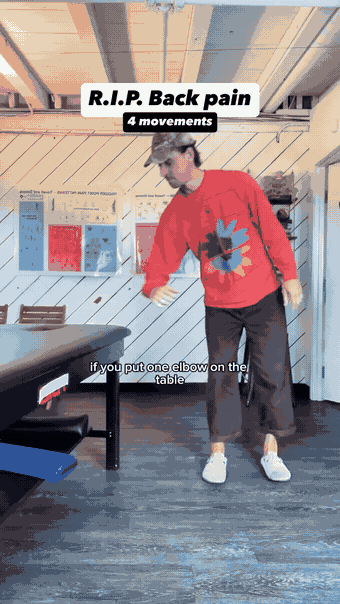
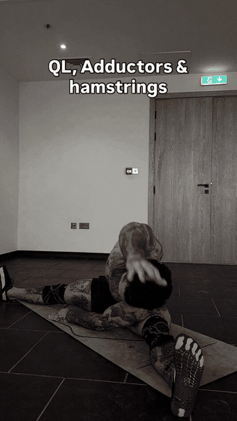
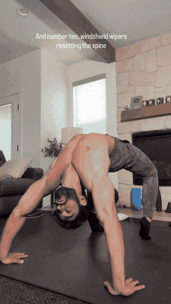
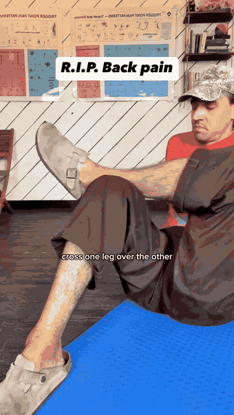
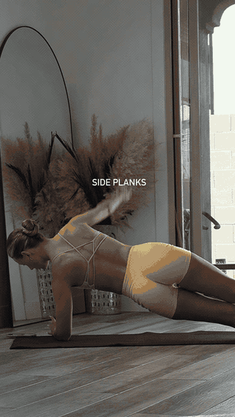
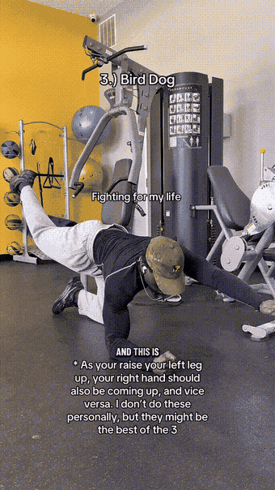
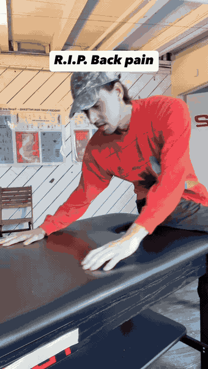
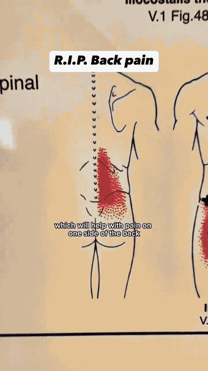

The QL move. Stand side-on to a table (or a chair-back / kitchen counter), put the inside elbow on it and cross the far leg behind the near one. Dip down 10–15 times and hold the bottom of each dip 1–2 s — that hold is where the quadratus lumborum lets go.

Seated wide-leg side bend — the classic long-hold QL stretch. Slides straight down the side of the torso into the QL and 12th rib, and picks up the adductors and hamstrings on the way.

Lumbar rotation with the shoulders pinned to the floor. Moves the low back through rotation instead of loading it — the companion piece to a tight QL.

The reel's glute-max move: sit with hands behind you, cross one ankle over the opposite knee, then let the crossed legs fall side to side ×15. Opens the deep hip rotators that keep the QL guarded.

The QL's day job is resisting side-bend, so train it exactly that way. Hips high, one straight line, no sagging into the bottom shoulder.

Quadruped opposite arm/leg raise. Trains the QL and deep core to hold the pelvis level while the limbs move — the anti-rotation half of the equation.

Sit on the edge of a table (or bed), reach the upper body over the far side, then lift the trailing back leg 10–15×. Stretches the lats while strengthening the glute medius — the muscle that carries the pelvis so the QL doesn't have to.

Fold a towel under one knee, get on all fours, round the back, then lift the towel-knee up and down 10–15×. Strengthens the glute medius while untwisting the lumbar spine — the closing move for one-sided low-back pain.